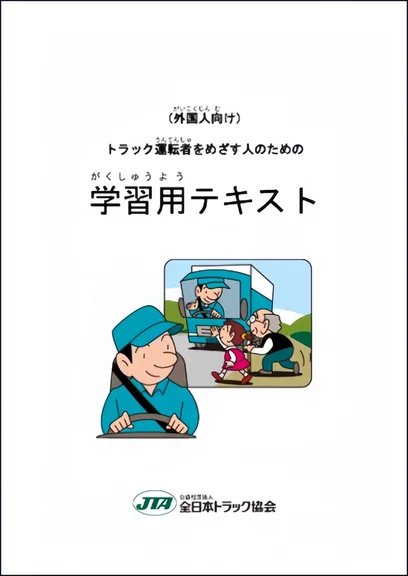
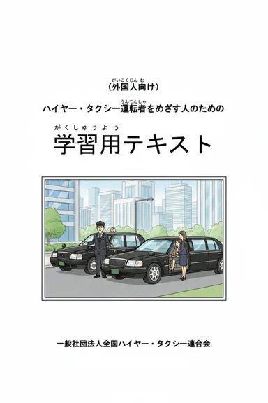
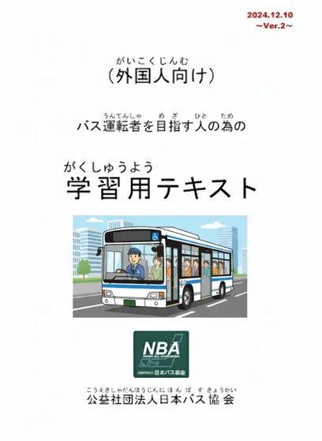
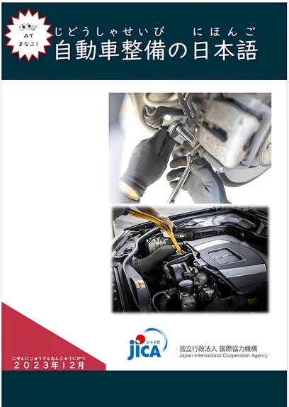
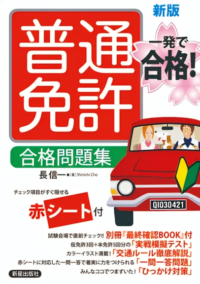
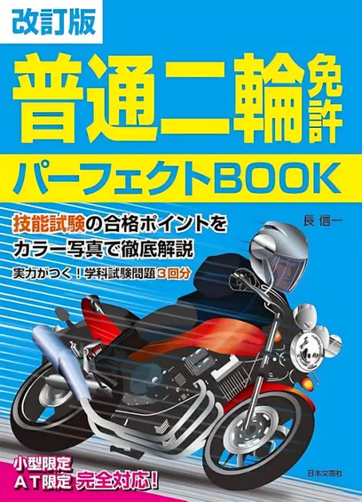
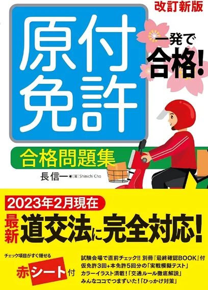
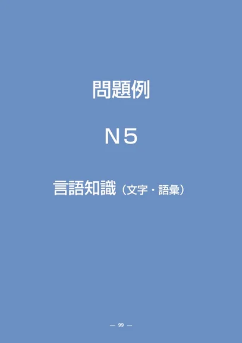
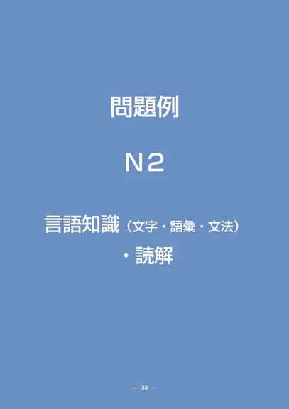
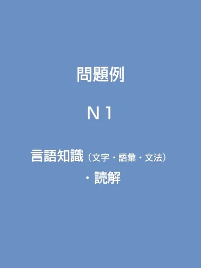

特定技能 / SSW
Truckကုန်တင်ကား / ထရပ်ကား
運行業務・荷役業務・安全衛生ယာဉ်မောင်းလုပ်ငန်း・ကုန်တင်ကုန်ချလုပ်ငန်း・လုံခြုံရေးနှင့် ကျန်းမာရေး


ရဲခွန် (YE LINN OO) သည် မြန်မာနိုင်ငံဖွား၊ ဂျပန်တွင်နေထိုင်အလုပ်လုပ်ကိုင်နေသော creator တစ်ဦးဖြစ်ပါသည်။ 登録支援機関 တွင် အလုပ်လုပ်ကိုင်နေပြီး foreign workers များ၏ 入社・入居調整၊ 研修၊ 面談 နှင့် 配属 support များကို လုပ်ဆောင်နေပါသည်။ ထို့ပြင် Japan တွင် နေထိုင်ခြင်း၊ စာလေ့လာခြင်း၊ အလုပ်အကိုင်၊ beauty နှင့် fitness ဆိုင်ရာ အသုံးဝင်သော content များကို SNS တွင်မျှဝေသလို၊ Tokutei Ginou Truck・Bus・Taxi လမ်းကြောင်းများအတွက်လည်း စနစ်တကျ online training ပေးလျက်ရှိပါသည်。
မြန်မာနိုင်ငံရှိ Technological University (Mawlamyine) တွင် Information Technology ကို လေ့လာပြီး B.E. (Information Technology) ဘွဲ့ရရှိခဲ့သည်。
Scholarship student အဖြစ် ဂျပန်သို့လာရောက်ကာ Global IT 学科 ကိုပြီးဆုံးခဲ့ပြီး၊ ထို့နောက် JLPT N1 ကိုလည်း အောင်မြင်စွာ ဖြေဆိုအောင်မြင်ခဲ့သည်။
မြန်မာလူငယ်များကို ဂျပန်စာလေ့လာခြင်း၊ ပညာရေးနှင့် အလုပ်အကိုင် ပြင်ဆင်မှုများတွင် volunteer အဖြစ် support ပေးလာခဲ့သည်。
လက်ရှိတွင် 登録支援機関 တွင် အလုပ်လုပ်ကိုင်နေပြီး Japan တွင် နေထိုင်ခြင်း၊ စာလေ့လာခြင်း၊ အလုပ်အကိုင်၊ beauty နှင့် fitness အကြောင်း content များကိုလည်း မျှဝေပြောဆိုနေသည်。
ကျွန်တော်ရဲ့ ရည်ရွယ်ချက်က ကိုယ်တိုင်ကြုံတွေ့လေ့လာခဲ့တဲ့ အတွေ့အကြုံတွေကို practical guidance အဖြစ် ပြန်လည်မျှဝေပြီး၊ မြန်မာလူငယ်များ အချိန်ကုန်သက်သာစေဖို့၊ language နဲ့ work skill တိုးတက်စေဖို့၊ Japan မှာ ပညာရေးနဲ့ အလုပ်အကိုင်အခွင့်အလမ်းကောင်းများဆီ ပိုမိုနီးကပ်စေဖို့ ကူညီပေးရန် ဖြစ်ပါတယ်。
စာလေ့လာခြင်း၊ Mock Exam နဲ့ Dictionary ကို အဓိကထားပြီး လိုတဲ့နေရာကို မြန်မြန်ဝင်နိုင်ပါတယ်။
特定技能၊ ယာဉ်မောင်းလိုင်စင်နဲ့ JLPT N5–N1 ကို ဒီနေရာမှာ လေ့လာနိုင်ပါတယ်။ Level အလိုက် Dictionary နဲ့ Mock Exam ကို တိုက်ရိုက်ဖွင့်နိုင်ပါတယ်။
運行業務・荷役業務・安全衛生ယာဉ်မောင်းလုပ်ငန်း・ကုန်တင်ကုန်ချလုပ်ငန်း・လုံခြုံရေးနှင့် ကျန်းမာရေး

運行業務・接遇業務・安全衛生ယာဉ်မောင်းလုပ်ငန်း・ခရီးသည်ဝန်ဆောင်မှုလုပ်ငန်း・လုံခြုံရေးနှင့် ကျန်းမာရေး

運行業務・接遇業務・安全衛生ယာဉ်မောင်းလုပ်ငန်း・ခရီးသည်ဝန်ဆောင်မှုလုပ်ငန်း・လုံခြုံရေးနှင့် ကျန်းမာရေး

シャシ・エンジン・点検・修理・工具ကိုယ်ထည်/အောက်ပိုင်းစနစ်・အင်ဂျင်・စစ်ဆေးခြင်း・ပြုပြင်ခြင်း・ကိရိယာများ

交通ルール・標識・安全運転・危険予測လမ်းစည်းကမ်း・လမ်းအမှတ်အသား・အန္တရာယ်ကင်းစွာ မောင်းနှင်ခြင်း・အန္တရာယ်ကြိုတင်ခန့်မှန်းခြင်း

交通ルール＋二輪特有の安全運転လမ်းစည်းကမ်း + မော်တော်ဆိုင်ကယ်အတွက် သီးသန့်လုံခြုံမောင်းနှင်နည်း

原付の交通ルール・標識・安全運転原付 အတွက် လမ်းစည်းကမ်း・လမ်းအမှတ်အသား・အန္တရာယ်ကင်းစွာ မောင်းနှင်နည်း

ဝေါဟာရ · သဒ္ဒါ · ခန်းဂျီး · စာဖတ် · နားထောင်N5 အတွက် စကားလုံးလေ့လာခြင်းနှင့် စာမေးပွဲလေ့ကျင့်ခြင်း

ဝေါဟာရ · သဒ္ဒါ · ခန်းဂျီး · စာဖတ် · နားထောင်N4 အတွက် စကားလုံးလေ့လာခြင်းနှင့် စာမေးပွဲလေ့ကျင့်ခြင်း
ဝေါဟာရ · သဒ္ဒါ · ခန်းဂျီး · စာဖတ် · နားထောင်N3 အတွက် စကားလုံးလေ့လာခြင်းနှင့် စာမေးပွဲလေ့ကျင့်ခြင်း
ဝေါဟာရ · သဒ္ဒါ · ခန်းဂျီး · စာဖတ် · နားထောင်N2 အတွက် စကားလုံးလေ့လာခြင်းနှင့် စာမေးပွဲလေ့ကျင့်ခြင်း

ဝေါဟာရ · သဒ္ဒါ · ခန်းဂျီး · စာဖတ် · နားထောင်N1 အတွက် စကားလုံးလေ့လာခြင်းနှင့် စာမေးပွဲလေ့ကျင့်ခြင်း



ဒီနေ့လည်း အတူတူ ဂျပန်စာလေ့လာကြမယ်။ N5–N1 Level ရွေးပြီး သင်ခန်းစာကို စတင်နိုင်ပါတယ်။
မူရင်းလေ့ကျင့်ရေးသင်ခန်းစာများဖြစ်ပြီး Official JLPT မဟုတ်ပါ။ Study Practice က Paid Exam Access ကို မပြောင်းပါ။

ဒီသင်တန်းက ဂျပန်နိုင်ငံမှာ အသက်မွေးဝမ်းကျောင်းအတွက် အသုံးဝင်မယ့် Professional Tokutei Ginou ယာဉ်မောင်းလက်မှတ်များကို စနစ်တကျလေ့လာနိုင်ဖို့ ရည်ရွယ်ထားတဲ့ online course ဖြစ်ပါတယ်။
Tokutei Ginou ကားမောင်းစာမေးပွဲ FORM တင်နည်းကို ဒီနေရာကနေကြည့်နိုင်ပါတယ်။ Truck / Taxi / Bus မူရင်းစာအုပ်လိုချင်ရင် အချက်အလက်ဖြည့်ပြီး Email ကနေ စာအုပ် Link ရယူနိုင်ပါတယ်။
Mock Exam များကို တစ်နေရာတည်းမှာ လေ့ကျင့်နိုင်ပါတယ်။ လက်ရှိသင်တန်းသားများက သင်တန်းသက်တမ်းအတွင်း Unlimited ဖြေလို့ရပြီး၊ ကျောင်းသားမဟုတ်သူများက Exam အမျိုးအစားတစ်ခုစီကို Free 1 ကြိမ် ဖြေလို့ရပါတယ်။ အဲဒီ Exam အမျိုးအစားကို ဒုတိယအကြိမ် ပြန်ဖြေချင်ရင် Paid Plan လိုအပ်ပါတယ်။
1 Week ¥1,000 · 1 Month ¥2,000
3 Months ¥3,000 · 1 Year ¥5,000
SSW Professional Transport Exams

運行業務・荷役業務・安全衛生ယာဉ်မောင်းလုပ်ငန်း・ကုန်တင်ကုန်ချလုပ်ငန်း・လုံခြုံရေးနှင့် ကျန်းမာရေး

運行業務・接遇業務・安全衛生ယာဉ်မောင်းလုပ်ငန်း・ခရီးသည်ဝန်ဆောင်မှုလုပ်ငန်း・လုံခြုံရေးနှင့် ကျန်းမာရေး

運行業務・接遇業務・安全衛生ယာဉ်မောင်းလုပ်ငန်း・ခရီးသည်ဝန်ဆောင်မှုလုပ်ငန်း・လုံခြုံရေးနှင့် ကျန်းမာရေး
SSW Auto Maintenance Exam

シャシ・エンジン・点検・修理・工具ကိုယ်ထည်/အောက်ပိုင်းစနစ်・အင်ဂျင်・စစ်ဆေးခြင်း・ပြုပြင်ခြင်း・ကိရိယာများ
Japan Driving License Practice

交通ルール・標識・安全運転・危険予測လမ်းစည်းကမ်း・လမ်းအမှတ်အသား・အန္တရာယ်ကင်းစွာ မောင်းနှင်ခြင်း・အန္တရာယ်ကြိုတင်ခန့်မှန်းခြင်း

交通ルール＋二輪特有の安全運転လမ်းစည်းကမ်း + မော်တော်ဆိုင်ကယ်အတွက် သီးသန့်လုံခြုံမောင်းနှင်နည်း

原付の交通ルール・標識・安全運転原付 အတွက် လမ်းစည်းကမ်း・လမ်းအမှတ်အသား・အန္တရာယ်ကင်းစွာ မောင်းနှင်နည်း
Japanese-Language Proficiency Test Practice

အခြေခံစာလုံး၊ ဝေါဟာရနဲ့ နေ့စဉ်သုံးစာကြောင်းတွေကို လေ့ကျင့်ရန်။
ဂျပန်စာ စတင်လေ့လာသူများအတွက် အခြေခံစာလုံး၊ ဝေါဟာရ၊ ရိုးရှင်းတဲ့ သဒ္ဒါနဲ့ နေ့စဉ်သုံး စာကြောင်းများကို လေ့ကျင့်နိုင်ပါတယ်။ ဝေါဟာရ၊ သဒ္ဒါ၊ ဖတ်ရှုခြင်းနဲ့ နားထောင်ခြင်း မေးခွန်းများကို စမ်းဖြေနိုင်ပါတယ်။

နေ့စဉ်ဘဝနဲ့ သက်ဆိုင်တဲ့ စာကြောင်းတွေကို ဖတ်နားလည်ရန်။
အခြေခံဂျပန်စာကို လေ့လာပြီးသူများအတွက် နေ့စဉ်ဘဝ သုံးဝေါဟာရ၊ သဒ္ဒါနဲ့ ရိုးရှင်းတဲ့ စာပိုဒ်ဖတ်ရှုခြင်းကို လေ့ကျင့်နိုင်ပါတယ်။ ဝေါဟာရ၊ သဒ္ဒါ၊ ဖတ်ရှုခြင်းနဲ့ နားထောင်ခြင်း မေးခွန်းများကို စမ်းဖြေနိုင်ပါတယ်။

အလယ်အလတ်အဆင့် စာဖတ်နဲ့ ဝါကျအဓိပ္ပာယ်ကို လေ့ကျင့်ရန်။
အလယ်အလတ် အဆင့်လေ့လာသူများအတွက် လုပ်ငန်းခွင်နဲ့ နေ့စဉ်ဘဝတွင် တွေ့ရသော ဝေါဟာရ၊ သဒ္ဒါနဲ့ စာပိုဒ်များကို လေ့ကျင့်နိုင်ပါတယ်။ ဝေါဟာရ၊ သဒ္ဒါ၊ ဖတ်ရှုခြင်းနဲ့ နားထောင်ခြင်း မေးခွန်းများကို စမ်းဖြေနိုင်ပါတယ်။

အလုပ်နဲ့ လူမှုဘဝဆိုင်ရာ စာသားများကို နားလည်ရန်။
အဆင့်မြင့်သို့ တက်လှမ်းနေသူများအတွက် သတင်း၊ ဆောင်းပါး၊ ရှုပ်ထွေးသော သဒ္ဒါနဲ့ စာပိုဒ်ဖတ်ရှုခြင်းကို လေ့ကျင့်နိုင်ပါတယ်။ ဝေါဟာရ၊ သဒ္ဒါ၊ ဖတ်ရှုခြင်းနဲ့ နားထောင်ခြင်း မေးခွန်းများကို စမ်းဖြေနိုင်ပါတယ်။

အဆင့်မြင့် ဝေါဟာရနဲ့ ရှုပ်ထွေးတဲ့ စာပိုဒ်တွေကို လေ့ကျင့်ရန်။
အဆင့်မြင့် ဂျပန်စာလေ့လာသူများအတွက် ခက်ခဲသော ဝေါဟာရ၊ သဒ္ဒါအသုံးအနှုန်းနဲ့ အကြောင်းအရာရှုပ်ထွေးတဲ့ စာပိုဒ်များကို လေ့ကျင့်နိုင်ပါတယ်။ ဝေါဟာရ၊ သဒ္ဒါ၊ ဖတ်ရှုခြင်းနဲ့ နားထောင်ခြင်း မေးခွန်းများကို စမ်းဖြေနိုင်ပါတယ်။
လူတစ်ယောက်ရဲ့ဘဝမှာ ကျွမ်းကျင်မှုအတတ်ပညာ (Skill) တစ်ခုခုရှိနေခြင်းက ဘယ်တော့မှအရှုံးမရှိပါဘူး။ ကျွန်တော်ကိုယ်တိုင်လည်း ပြည်ပမှာအလုပ်လုပ်ရင်း အခက်အခဲပေါင်းစုံကြားကနေ ဒီပညာရပ်တွေကို လေ့လာခဲ့ရတာပါ။ အခုတော့ ကျွန်တော်သိထားတဲ့အတွေ့အကြုံနဲ့ နည်းလမ်းတွေကို ညီအစ်ကိုမောင်နှမတွေ အချိန်ကုန်သက်သာစေဖို့နဲ့ အလုပ်အကိုင်အခွင့်အလမ်းကောင်းတွေ ရရှိဖို့အတွက် Nexlynk နဲ့ပူးပေါင်းပြီး ဒီသင်တန်းကိုဖန်တီးလိုက်တာဖြစ်ပါတယ်။ စိတ်ပါဝင်စားမှုရှိရုံနဲ့တင် မလုံလောက်ဘဲ စနစ်တကျလေ့လာသင်ယူမယ်ဆိုရင် သင်တို့ရဲ့အနာဂတ်က အခုထက်ပိုတောက်ပလာမှာသေချာပါတယ်။ အားလုံးပဲ သင်တန်းမှာတွေ့ကြမယ်။


၁–၂ မိနစ်ဗီဒီယို။ Script, ရိုက်ကူးခြင်း, တည်းဖြတ်ခြင်းနှင့် ပြင်ဆင်မှု ၁ ကြိမ်ပါဝင်သည်။
ပုံမှန် Content ထဲမှာ Product / Service ကို သဘာဝကျကျ ထည့်သွင်းမိတ်ဆက်ပေးခြင်း။
သင်တန်းအပ်ရန်၊ အလုပ်ကိစ္စ၊ Brand Collaboration သို့မဟုတ် အထွေထွေမေးမြန်းမှုများအတွက် ဒီနေရာကနေ တိုက်ရိုက်ဆက်သွယ်နိုင်ပါတယ်။ တတ်နိုင်သမျှ မြန်မြန်ပြန်လည်ဖြေကြားပေးပါမယ်။
သင်တန်း၊ အလုပ်၊ Collaboration နဲ့ အခြားမေးမြန်းမှုတွေကို Form ကနေ ရေးပို့နိုင်ပါတယ်။ ဖြည့်ပြီးတဲ့အခါ Email App ပွင့်လာပြီး ရေးထားတဲ့စာကို အလိုအလျောက်ထည့်ပေးထားပါမယ်။
Email ပို့ရန်→koyekmw2019@gmail.com